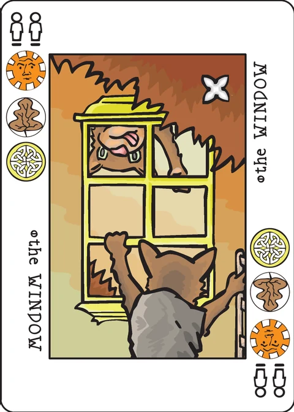

Window
a Decktet solitaire game
Object of the game: To merge all of the cards into a single pile.
Setup
Deal out nine cards face down, in a three by three grid. Deal nine more cards face down on top of those. Do it again, so that you have nine stacks of three cards each. Finally, deal one card face up onto each of the stacks.
Game play
- When a face up card on one stack is a rank higher or lower than the face up card on an adjacent stack, you may take all the face up cards from one of the stacks and move them to the adjacent stack. For example, a 4 card could move onto either a 3 or a 5.
- When you move face up cards from a stack, immediately flip over the top face down card remaining in that stack.
- If there are no remaining cards in a stack (if it is just an empty space) then you may move the face up cards from any adjacent stack into that space.
- Adjacent stacks are right, left, up, or down, but not diagonal.
- When you move a stack, you must move all the face up cards in that stack. You may not split the face up cards, and you may not move face down cards.
- Aces may move onto either 1s or Crowns. Crowns may move onto either 9s or Aces.
The extended deck
Window is not meant to be played with the Excuse or Pawns, and I'm not sure what you would do with them. That doesn't mean you couldn't make something up.
Note on this implementation
The wrap rule above is quoted from the wiki as written: "Aces may move onto either 1s or Crowns" — but an Ace is rank 1, so "1s" cannot mean a rank one away. This app reads the rule the way the rest of the sentence implies: a pile may move onto a neighbouring pile whose top card is one rank away (2…9 in the usual way), and Ace wraps onto Crown in addition — so Ace meets 2 and Crown, and Crown meets 9 and Ace.
The move test is the other ambiguous clause: "When a face up card on one stack is a rank higher or lower than the face up card on an adjacent stack". Once piles accumulate, a stack shows several face-up cards. This app reads it as any face-up card in the moving pile meeting the neighbour's top card — which is also the reading that leaves the game winnable: a search over both readings found no possible win at all under a strict top-card-only test, and wins under this one. The wiki page does not define a score, so this app records only whether you win and how many moves it took.
Credits
Original design: Cristyn Magnus. Rules text: P.D. Magnus.
These rules are copied from the Window page of the Decktet wiki (page revision 3, 3 April 2009) so they can be read offline, under the wiki's CC BY-NC-SA 3.0 licence. Cards by P.D. Magnus, same licence.
Further reading: Window at BGG